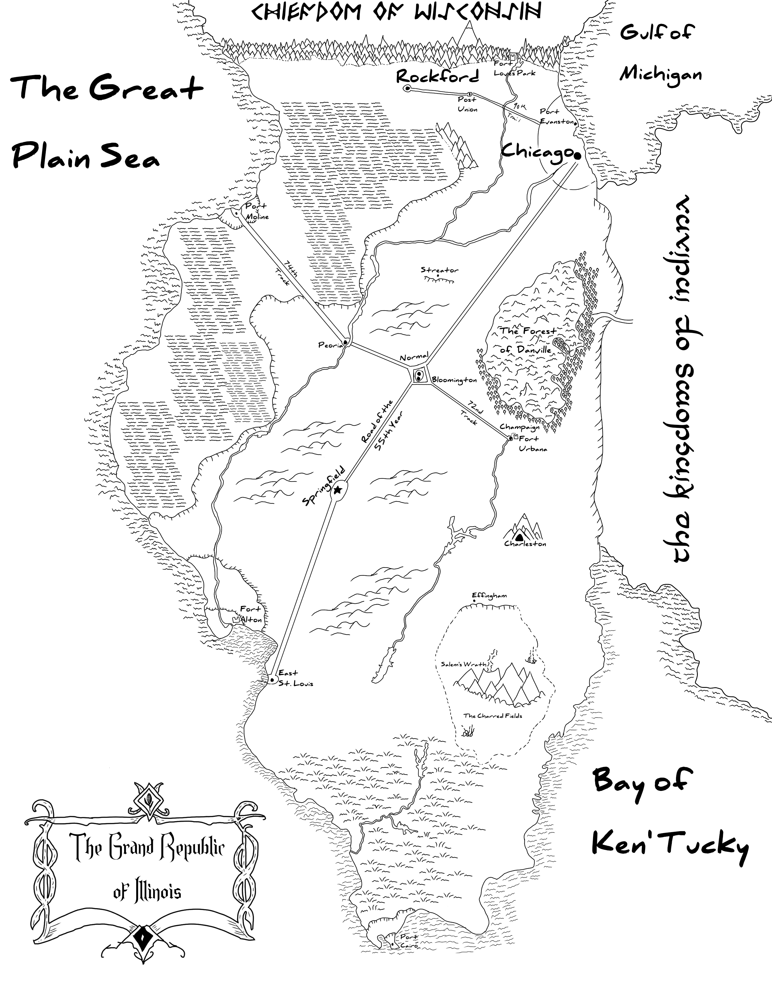
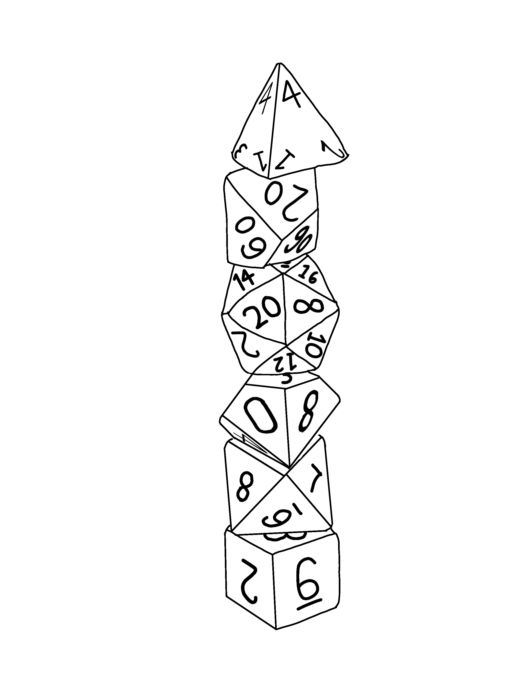

This greyscale drawing was heavily inspired by various fantasy style villages you can find all across various art sites. Made by compositing multiple different images, this drawing predominantly focuses on linework and interpreting information in artwork when their aren't lines to dictate what is present.

This painting was made in an attempt to emulate the style of Cédric Peyravernay, the concept artist for the video game franchise Dishonored. We see Corvo Attano, one of the main characters of the series, fighting an enemy in the Void, with a hurt Void Whale floating in the background.
Emulating physical map makers, this painting is a map of Illinois and the surrounding area, reimagined in a fantasy style. The cities and towns shown are the largest and most influential in the state, with several smaller locations marked that have meaning to my friends and family.
Much simpler, this drawing was commissioned by a friend of mine as a tattoo design. Using a physical dice stack as reference, this drawing involved a lot of reworking and moving of dice to get the right layout and the highest numbers showing.